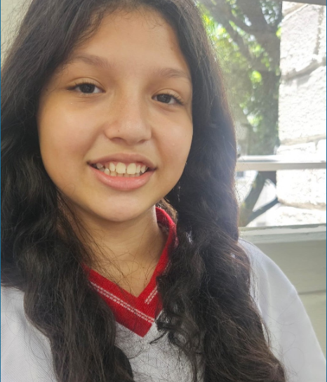
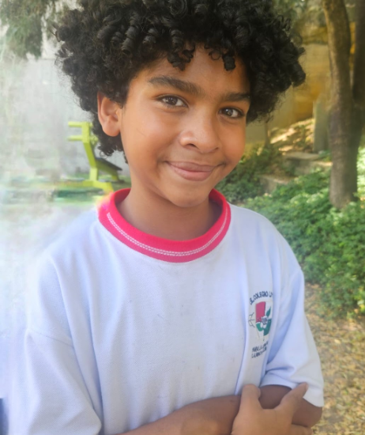
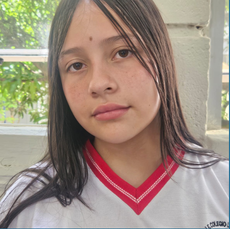
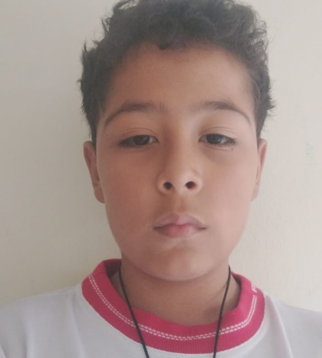
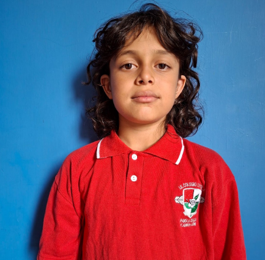

Somos cinco estudiantes del Colegio Loyola que trabajan juntos en la Muestra Institucional de proyectos de investigación 2026.
Nuestro equipo

Mariangel Rúa Hernández
Nací el 15 de junio del año 2014, tengo 12 años que acabo de cumplir recientemente, vivo con mi mamá y mis
abuelos (de parte de mi mamá).
Estudio en la Institución Educativa Colegio Loyola Para La Ciencia Y La Innovación, en la cual entré este año.
Estoy en el grado 6.3.
Tengo muchos pasatiempos, pero de todos me gusta mucho pintar, dibujar, estudiar, jugar voleibol, estar con
mis amigos, y lo que más amo es escuchar música, bailar y estar con mi familia y mi mamá.
Estoy en clase de inglés en la Academia de LCN Idiomas. También estoy el clase de violín, de canto y de
movimiento y prontamente de baile, toco varios instrumentos, toco flauta, piano y violín.
Algo que me apasiona enormemente y que pierdo hasta la noción del tiempo, es bailar con música.
Mi color favorito es el azul, mi comida favorita son los espaguetis o pastas y mis animales favoritos son el
Gato y el Koala.

Isaid León Macías Díaz
Hola
Mi nombre es Isaid León Macias Diaz.
Tengo 11 años. Nací el 26 de diciembre en el año 2014.
Ingresé a la Institución Educativa Colegio Loyola Para La Ciencia Y La Innovación en 2026. Gracias al Colegio
he podido aprender mas de Ciencias Naturales; esta siempre ha sido mi pasión. En este Colegio aprendí a
enfrentar a mi enemigo 1: el trabajo en equipo.
Mis pasatiempos son:
Leer, jugar con legos, escuchar música, aprender cada día mas de biología y estudiar mucho de Química y
Física.
Mis sueños son graduarme de la Universidad de Antioquia, viajar a Australia, convertirme en biólogo y
encontrar la cura para el pulpo de anillos azules

Hellen Michell González Cardona
Mi nombre es Hellen Michell González Cardona. Nací el 28 de agosto del 2014, tengo 12 años.
Ingresé a la Institución Educativa Colegio Loyola Para La Ciencia Y La Innovación en el 2026. Gracias al
Loyola he aprendido a dejar un poco la pena al lado. El Colegio me ayuda q pensar a trabajar en grupo.
Mis pasatiempos son dormir, jugar voleibol y salir a distraerme.
Mis sueños son graduarme del Colegio y de la universidad, ser profesional en lenguas y viajar por el mundo.

Alejandro Bedoya Saldarriaga
Soy Alejandro Bedoya Saldarriaga.
Ingresé a la Institución Educativa Colegio Loyola Para La Ciencia y La Innovación en 2026. El Colegio me ayuda
a ser mas creativo y aprender más.
Mi sueño es terminar mis estudios, estudiar en la Universidad y enfocarme en la ingeniería aunque no me decido
sobre cual Ingeniería en específico, pero creo que será Ingeniero Aeroespacial.
Pienso ir a Estados Unidos a terminar mis estudios allá y estar en la Nasa.
Me apasiona el espacio y la creación de nuevas ideas y siempre pienso en eso.
Mi comida favorita son los espaguettis y me gusta mucho jugar videojuegos.
Soy bueno haciendo trabajo en equipo y haciendo amigos y eso es todo sobre mí.

Emmanuel Uribe Mejía
Ingresé a la Institución Educativa Colegio Loyola Para La Ciencia y La Innovación en 2026. La metodología del
Colegio me ha ayudado a aprender mas rápido. Mi sueño en el Colegio es terminar mis estudios.
Al terminar la secundaria quiero estudiar Física en la Universidad, todavía no me decido por que rama de la
física.
Practico patinaje de velocidad con el Club Orión en la pista de patinaje María Luisa Calle.
Toco teclado y guitarra eléctrica. Me gusta dibujar, construir objetos con cartón y hacer origami.
Estoy en un Club Científico en el Parque de la Conservación (Zoológico). Mi animal favorito es el Halcón
Peregrino
y mi comida favorita es la pizza
Nuestra historia
Somos el equipo Down Four Fives. Todo empezó en el año 2025,
cuando nuestras mamás nos hablaron del Colegio Loyola, uno
de los mejores colegios públicos de Medellín, reconocido
por su exigencia académica. Tiempo después, nos dijeron que
debíamos presentar los documentos y realizar un examen de
admisión. El examen nos pareció relativamente fácil y nos
llenó de felicidad saber que habíamos sido admitidos al Loyola.
Tiempo después participamos en la semana de inducción.
Llegamos muy nerviosos, pero también muy contentos de estar
en un nuevo colegio. Cuando nos entregaron los horarios,
nos dimos cuenta de que las clases eran cortas y algunas
materias nos parecían sencillas. Una semana después
comenzaron las clases, con un horario de seis horas.
Al principio no teníamos algunas asignaturas, como física,
química, ECILAB y biología, porque faltaban algunos profesores.
Para nosotros, investigar significaba simplemente buscar
algo, pero después comprendimos que no era solo eso.
Investigar consiste en encontrar, recolectar y analizar
información sobre un tema o una persona para conocerlo
más a fondo.
Después de las vacaciones de mitad de año, durante la
primera semana de regreso, nos dijeron cuáles serían
nuestros equipos de trabajo colaborativo.
Para nosotros fue un gran reto, porque al principio se
nos dificultaba trabajar en equipo y coordinarnos.
Sin embargo, gracias a nuestros profesores y directivos,
hemos mejorado. A medida que pasaba el tiempo, fuimos
acostumbrándonos a trabajar juntos y solucionando algunos
de los problemas que teníamos al comienzo.
Aunque todavía tenemos dificultades por resolver,
siempre tratamos de mejorar y ayudarnos. Uno de nuestros
problemas más comunes es la comunicación, ya que a veces
nos cuesta ponernos de acuerdo. A pesar de eso, nos
sentimos bastante a gusto con nuestro grupo colaborativo
y esperamos continuar juntos hasta grado once.
Tenemos muchas expectativas y metas, tanto en el colegio
como en nuestro grupo. Cada uno de nosotros tiene sueños
diferentes: ganar el año, ingresar a la universidad,
viajar por el mundo y conocer nuevos países. Pero,
sobre todo, queremos aprender de nuestros errores
y nuestros aciertos para crecer como personas.
Nuestras autobiografías
Hellen Michelle González Cordero
Hola, soy Hellen Michelle González Cordero. Nací el
28 de agosto de 2014 y estudio en el Colegio Loyola
para la Ciencia y la Innovación. Antes estudiaba en
el colegio San Antonio de Padua.
Mi meta es continuar en el Loyola hasta grado once,
graduarme junto con mi grupo colaborativo y vivir
nuevas experiencias. Quiero conocer otros países
y hacer cosas diferentes relacionadas con el voleibol.
En mi tiempo libre me gusta dormir, practicar voleibol,
estudiar y jugar videojuegos. Mi nombre significa
«luz» y tiene origen griego, relacionado con la luz
y el sol.
Cuando sea grande quiero ser veterinaria. Mi materia
favorita es artística y la que menos me gusta es
matemáticas. Mis deportes favoritos son el voleibol,
la natación y el baloncesto.
Mi compromiso
Yo, Hellen Michelle González Cordero, como integrante
del grupo Down Four Fives y estudiante del grado 6°3,
me comprometo a ser responsable, tener paciencia,
cumplir con mi rol y ser una buena compañera.
Mariangel Rúa Hernández
¡Buenos días, profe! ¿Cómo está? Mi nombre es Mariangel
Rúa Hernández, pertenezco al grado 6B y nací el
15 de junio de 2014. Tengo doce años. Estudio en la
Institución Educativa Colegio Loyola para la Ciencia
y la Innovación. Antes estudiaba en el Instituto
San Carlos, en Belén, perteneciente a La Salle.
Vivo con mi mamá y mis abuelos en Belén La Mota.
Tengo muchos pasatiempos, pero los que más me gustan
son jugar voleibol, pintar, dibujar y leer. Soy una
persona muy sociable, me encanta hablar y pasar tiempo
con mi familia y mis amigos. Lo que más amo es bailar
y cantar.
Mi comida favorita es la pasta, especialmente los
espaguetis. Mi color favorito es el azul cielo,
mi animal favorito es el koala y me encantan los dulces.
Estudio inglés en la academia LCN y participo en las
actividades extracurriculares de voleibol del Loyola.
Me encanta estudiar en este colegio y disfrutar
las experiencias que vivo allí.
Mi aporte al equipo
Aporto disciplina, orden, capacidad de escucha,
respeto, dedicación y responsabilidad. Me gusta
resolver los conflictos mediante el diálogo,
escuchar a los docentes y tener en cuenta las
opiniones de mis compañeros para que podamos
trabajar mejor como equipo colaborativo.
Alejandro Bedoya Saldarriaga
Mi nombre es Alejandro Bedoya Saldarriaga. Estoy en
grado sexto, estudio en el Colegio Loyola y tengo
once años. Nací el 4 de mayo de 2015.
Mi nombre, Alejandro, tiene origen griego y se relaciona
con el significado de «el que ayuda a las personas».
Me gusta compartir tiempo con mis amigos y mi papá
está presente en mi vida y me lleva a clases.
Actualmente recibo clases de inglés, donde soy el
mesero de la clase. También asisto a clases de manga
y dibujo, actividades que me permiten desarrollar
mi creatividad y aprender cosas nuevas.
Además, participo en el Semillero de Niños Científicos
de la Universidad Nacional, donde creamos un brazo
robótico. Tenemos previsto viajar a Argentina para
presentar el brazo robótico y nuestros proyectos.
Emmanuel Uribe Mejía
Soy Emmanuel Uribe Mejía, tengo once años y estudio
en el Colegio Loyola. Nací el 22 de noviembre de 2014
en Medellín.
Mis papás buscaron muchos nombres antes de elegir
el mío. Incluso tenían una lista de cincuenta nombres.
Cuando escucharon «Emmanuel», les gustó y decidieron
que ese sería mi nombre. El apellido Uribe viene
de mi papá y el apellido Mejía, de mi mamá.
Mi nombre es de origen hebreo y significa
«Dios está con nosotros».
Estudié desde jardín hasta quinto en la Escuela
Universidad Nacional. Allí teníamos una sala de
informática y un parque. En lugar de que los estudiantes
fueran a los salones de los profesores, los profesores
iban a nuestros salones.
Quiero ser físico cuántico porque me llaman mucho
la atención las partículas subatómicas. También
sueño con llegar a la Selección Colombia de patinaje
de velocidad. Entreno en el Club Orión desde los
siete años.
Me gusta dibujar manga y hacer origami. Entre mis
fortalezas para la investigación están la curiosidad
y la perseverancia. Me considero creativo, divertido,
trabajador e ingenioso.
Aspectos por mejorar
Quiero mejorar mi paciencia y aprender a distraerme
menos para concentrarme mejor en mis actividades
y cumplir mis objetivos.
Isaid León Macías Díaz
Todo comenzó cuando estaba en tercero de primaria.
Mi profesora de apoyo les recomendó a mis padres
que me inscribieran en el Colegio Loyola porque
tengo interés y facilidad para las ciencias naturales.
Después de graduarme de quinto, estaba muy emocionado
porque mi mamá me contó que podía ingresar a un colegio
en el que aprendería mediante experiencias de laboratorio.
Más adelante asistimos a una reunión para conocer
el proceso de admisión. Presenté las pruebas y,
aunque solo había cien cupos, logré ser admitido.
Durante mi primer día nos organizaron en grupos.
Al principio casi no hablaba con mis compañeros,
pero con el paso de los días encontré amigos y
empecé a relacionarme más con los demás. También
compartía con mis compañeros durante los descansos.
Con el tiempo hice nuevas amistades y viví diferentes
experiencias con mis compañeros. Algunas veces tuve
dificultades con otras personas, pero esas situaciones
también hicieron parte de mi adaptación al colegio.
Después de las vacaciones regresé a clases y,
cuando llegó abril, aumentó la cantidad de tareas.
Ahora estoy realizando este trabajo, que me permite
recordar mi experiencia en el Loyola y compartir
parte de mi historia.